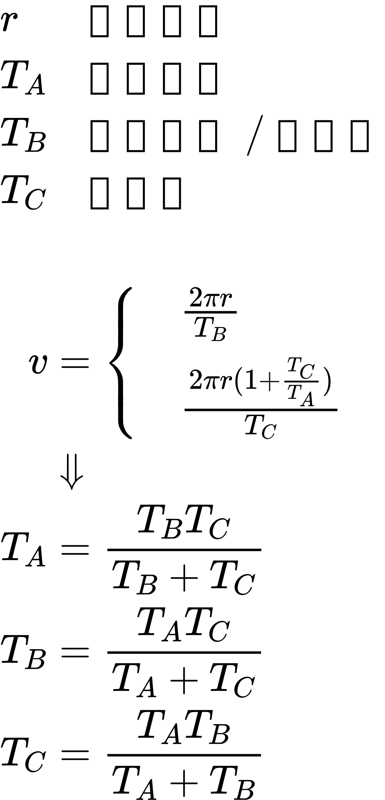

太阳日和恒星日的精确转换
太阳日作为基本时间定义, 是直观意义上的一日标准
太阳日 具体说就是 太阳直射点随着自转再次到达同一个直射点的周期 为 一天
却不能直接用于描述当前天体自转运动
此时除了 地球自转 还包含了 地球公转 的复合运动
所以有了以遥远平行光作为参考的 恒星日
恒星日就是地球自转周期
通过示意图可以直观看出它们的关系
为了使计算方便, 行星轨道假设为正圆
KSP中Kerbin和Mun公转轨道也是正圆
它们甚至共面, 毕竟是所有玩家的起点

\begin{array}{l}
\begin{array}{l}
r &赤道半径\\
T_A &公转周期\\
T_B &自转周期/恒星日\\
T_C &太阳日\\
\end{array}\\
\\
\begin{align}
v &= \left\{\begin{array}{l}
&\frac{2 \pi r}{T_B}\\
&\frac{2 \pi r(1+\frac{T_C}{T_A})}{T_C}\\
\end{array}\right.\\
&\Downarrow \\
T_A &= \frac{T_B T_C}{T_B+T_C}\\
T_B &= \frac{T_A T_C}{T_A+T_C}\\
T_C &= \frac{T_A T_B}{T_A+T_B}\\
\end{align}
\end{array}
三者关系相似得出奇
不知道中间还有什么隐含的联系